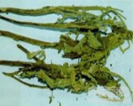

大风艾

拼音
Dà Fēnɡ ài
别名
艾纳香、冰片艾
来源
为菊科艾纳香属植物大风艾Blumea balsamifera DC.，以根、嫩枝、叶入药。夏秋采收，鲜用或阴干。
生境分布
栽培或野生。多生于园边、路旁或山坡的灌木丛中。主产广西、广东、贵州、云南等省区。
药材特点
一年生或多年生大草本或灌木，有时呈乔木状，全株密被黄白色绒毛，高达3米，具香气。茎直立，木质化，多分枝，青白色。单叶互生，短柄或无柄。叶片椭圆形或椭圆状披针形，长12～24厘米，宽4～10厘米，先端短尖，基部浑圆或广楔形，边缘具不整齐锯齿，常于基部横展羽状全裂，上面绿色有短柔毛，下面密被银白色绒毛。4～5月开花，头状花序较小，径约1厘米，排列成伞房状；总苞片披针形，数轮，覆瓦状排列，外轮短小，内轮较长；花黄色，边花为雌性，多数，丝状，顶端有细齿牙；中央为两性花，花冠管状，边缘5裂；雄蕊5，伸出管口之外；柱头2裂，子房下位。瘦果有10棱，被绒毛，顶端有淡白色冠毛1轮。
性状
无性状数据
性味
辛、微苦，微温。
功能主治
祛风消肿，活血散瘀。用于感冒，风湿性关节炎，产后风痛，痛经；外用治跌打损伤，疮疖痈肿，湿疹，皮炎。
用法用量
0.5～1两；外用适量，鲜茎叶捣烂敷患处，或煎水洗。
化学成分
茎、叶含挥发油，其主成分为左旋龙脑（l-borneol），并含少量的桉油精（cineole）、左旋樟脑、倍半萜醇等。另据报道，全草显黄酮甙、香豆精、三萜类化合物的反应。
药理作用
1：大风艾的提取液有扩张血管：降低血压的作用，临床上可用于失眠症和高血压病
2：1%大风艾浸剂的利尿作用：与咖啡因及茶叶浸剂相似，但较后者为弱
摘录
《全国中草药汇编》